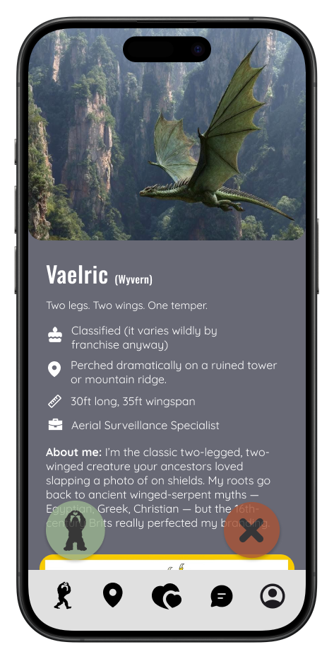
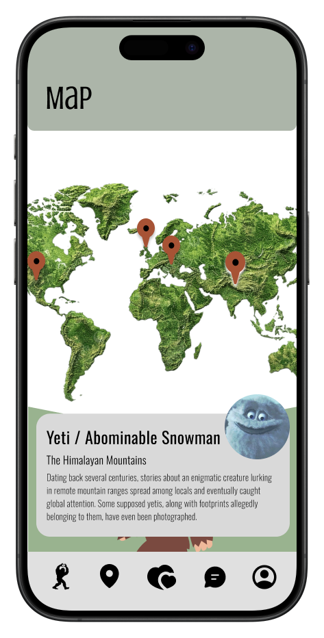
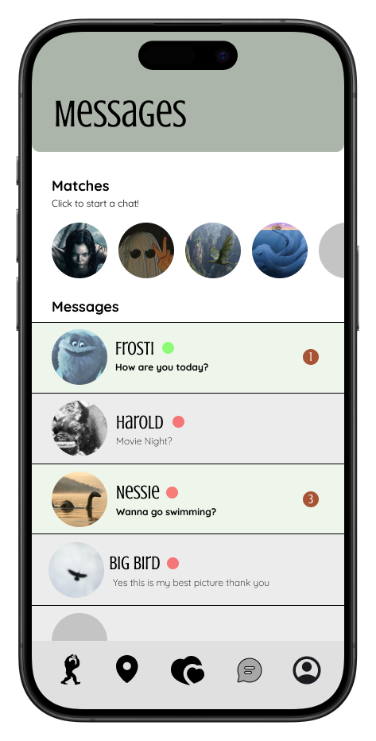

Lost & Found 🖤
A mobile dating app prototype for cryptids. Reimagining modern dating through playful, character-driven UX and speculative worldbuilding.

Overview
Lost & Found is a mobile dating app prototype designed entirely in Figma, but for cryptids. Inspired by apps like Tinder and Hinge, the project imagines a world where creatures like Bigfoot, Mothman, and the Loch Ness Monster can form meaningful connections through shared history, identity, and mythology.
The name “Lost & Found” plays on the idea that cryptids are often misunderstood, overlooked, or hidden from the world. The app reframes dating as a space for discovery and belonging, even if you have eight legs or live in another dimension.
My Role
I was responsible for the overall user experience flows, interface layouts, visual design system, and component library, as well as assembling the final end-to-end clickable prototype.
I led interaction design across the app, defined reusable UI components, and ensured the final experience felt cohesive, expressive, and usable across all screens.
Goal
- Reimagine familiar dating patterns in unexpected ways
- Explore character-driven and comedic UX design
- Create a polished, believable end-to-end product experience
Selected Screens
A few snapshots from the prototype: onboarding, matching, messaging, and location-based discovery.



Why This Works
Lost & Found delivers a fully realized dating app experience tailored specifically for cryptids. The prototype includes onboarding, profile creation, swipe-based matching, in-app messaging, compatibility analysis, and location-based discovery grounded in cryptid lore.
Key Features
- Cryptid-specific profiles with abilities, traits, and lore
- Swipe-based matching interface
- Chat and messaging system
- Compatibility meter grounded in mythology
- Map-based habitat selection
Key Outcomes
- Familiar patterns reduce learning curve
- Worldbuilding adds emotional depth and humor
- Speculation creates space for identity and boundaries